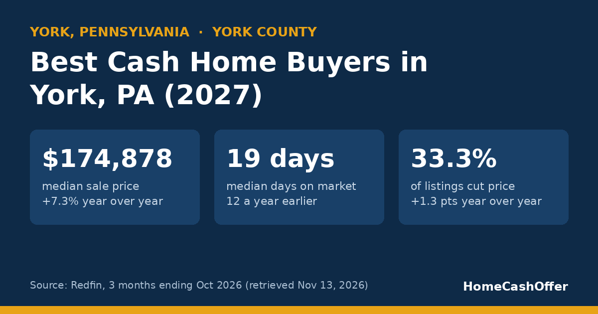

Also: Philadelphia vacant rowhome guide · Tampa FL 2027 cash buyers · Irving TX 2027 cash buyers
Best Cash Home Buyers in York, PA (2027)
Short answer: York sellers going into 2027 mostly choose between York-based investors with their own sites (York PA Home Buyer, Eric Buys Your House, Cash House Buyers, Will Buys Houses) and nationwide as-is buyers such as HomeCashOffer. The big iBuyers aren’t really an option here: Offerpad’s own service-area file lists no Pennsylvania markets at all. Inside York City, the deed is taxed at 2% in total (1% state, 0.5% city, 0.5% school district), and Pennsylvania’s seller disclosure law still applies to most cash sales, so read the net sheet, not just the headline price.

York’s market in five numbers
Redfin’s York city housing market page covers the three months ending October 2026:
| Measure | York (city) | Note |
|---|---|---|
| Median sale price | $174,878 | up 7.3% year over year |
| Median days on market | 19 | 12 a year earlier |
| Homes sold (October) | 125 | 168 a year earlier (down 25.6%) |
| Sale-to-list ratio | 99.2% | up 0.6 pt year over year |
| Listings with a price drop | 33.3% | up 1.3 pts year over year |
Redfin gives York a Compete Score of 86, “very competitive.” The average home sells about 1% below list and goes pending in around 21 days, while hot homes sell about 2% over list in around 6 days. 27.9% of homes sold above list, down 4.8 points from a year earlier. For the wider county, Redfin’s York County page shows a $297,599 median (down 0.29%) and 15 median days on market. So a clean, updated rowhome in a city neighborhood still sells quickly. The houses that sit are the ones with old knob-and-tube wiring, a slate roof that leaks, a tenant who won’t cooperate, or an estate that hasn’t been sorted out. Those owners are the ones who usually call cash buyers.
How we put this list together
To be upfront: HomeCashOffer wrote this page, and we’re on the list. Nobody paid to be included. To make the list, a company’s own website had to say it buys houses in York. We describe each one using its own claims and link out so you can check. We left out star ratings and “homes bought” counts we can’t verify. Checked November 13, 2026.
Cash buyers that list York
| Company | Type | What its own site says about York |
|---|---|---|
| HomeCashOffer | Nationwide as-is cash buyer | Makes written as-is offers on York houses, with no commission when you sell to us and a closing date you choose (as little as 7 days when title allows). Closes through a Pennsylvania title company or settlement attorney. Based in Oklahoma City, not York County. York, PA page. |
| York PA Home Buyer | York investor | Operates as York PA House Buyers, LLC. Says it buys in any condition in York and Adams County, pays all closing costs, and can close in as little as 7 days, often in 10 days or less. |
| Eric Buys Your House | York-based Central PA investor | Lists a York office on Eastern Blvd. Says it buys as-is with no repairs, fees or commissions and lets you pick the closing date. Also serves Lancaster, Harrisburg and Mechanicsburg. |
| Cash House Buyers, LLC | Family-owned investor, York office | Lists an office on S. Duke St in York. Says it makes an all-cash offer within 24 hours, can close in as little as 7 days, and will buy with tenants in place. Also buys in Maryland and Virginia. |
| Will Buys Houses | Local owner-operator | Lists an office on E. Market St in York. Says it buys in York and throughout York County in any condition, with a cash offer within 24 hours and closing in as little as 7 days. |
Ask every buyer two questions. Will you buy the house yourself, or assign the contract to someone else? Can the written price change after your walkthrough or inspection? Then ask who pays the transfer tax, because in Pennsylvania the contract decides that.
Pennsylvania rules that change the net sheet
- 2% realty transfer tax in York City. Pennsylvania charges 1% of the value on a deed transfer, and the Department of Revenue says grantor and grantee are jointly liable for it. York County’s Recorder of Deeds puts the total at 2%: 1% to the state and 1% to the local taxing bodies. For York City, the PA DCED 2026 municipal tax register lists that local 1% as 0.5% for the City of York and 0.5% for the York City School District. At York’s $174,878 median that’s about $3,498 in total (our arithmetic), traditionally split between buyer and seller. Some cash buyers offer to pay all of it, so get that in writing.
- The seller disclosure form. A seller of residential property has to give the buyer a signed and dated property disclosure statement listing known material defects before the agreement of sale is signed (68 Pa.C.S. § 7303). Selling as-is or for cash doesn’t remove that duty, and the seller must not fail to disclose a known material defect (§ 7308). A buyer who is harmed by a willful or negligent violation can sue for actual damages within two years after settlement (§ 7311).
- Estate sales are exempt from the form. Transfers by a fiduciary in the course of administering a decedent’s estate, guardianship, conservatorship or trust are excepted from the disclosure chapter (§ 7302(a)(1)). That helps an executor selling a parent’s York house they never lived in, although any known defect still shouldn’t be hidden.
- New flood notice. Act 74 of 2026 (signed October 22, 2026, effective 60 days later) added § 7305.2. Once the Insurance Department posts its flood information online, sellers have to hand buyers a written “Important information on flood insurance” notice with, or in addition to, the disclosure form. Redfin’s flood data says 21% of York properties (839) are likely to be affected by flooding over the next 30 years.
- Inheritance tax on a parent’s house. Pennsylvania’s Department of Revenue taxes inherited property at 0% to a surviving spouse, 4.5% to direct descendants and lineal heirs, 12% to siblings and 15% to other heirs. It’s due at death and goes delinquent nine months later, with a 5% discount if paid within three months. If the house is the estate’s main asset, selling it is often how that bill gets paid.
- Mortgage-rate backdrop. Freddie Mac’s PMMS put the 30-year fixed rate at 7.11% as of November 12, 2026 (15-year 6.45%), up from 6.24% a year earlier. That’s part of why York homes are taking longer to sell than last year.
When a York seller should skip the cash buyers
- Your house is updated, inspects cleanly and you can wait a month. At 99.2% of list and 19 median days on market, a well-priced agent listing will usually net more, even after commission.
- Your house is outside the city in a part of York County that sells fast. Redfin’s county page shows a 15-day median across York County, so get an agent’s estimate before you call investors.
- One repair would let a financed buyer get a loan. If fixing a roof leak or a failed sewer lateral would get an FHA or conventional buyer approved, it may pay for itself.
A cash sale makes more sense if the house needs work you won’t take on, tenants are staying, it’s an inherited house in York County probate, taxes or liens are behind, you live out of state, or you’re on a deadline. For estate timing elsewhere, see our probate timeline by state.
How HomeCashOffer buys in York
Send us the address, some photos or a video walkthrough, and the date you’d like to close. We’ll send a written as-is number with no repair list and no commission. A Pennsylvania title company or settlement attorney handles the closing and records the deed with the York County Recorder. Compare our offer with the others on this page, and if someone beats it, take theirs. Call (405) 622-8705, or request an offer on our York, PA cash offer page. Nearby: Lancaster and Harrisburg. For the rest of the state, see our Pennsylvania seller hub. Nationwide 2027 roundup: best cash home buyers 2027.
HomeCashOffer is not a law firm and this isn’t legal advice. Talk to a licensed attorney in your state about your situation. Market and flood-risk figures are from Redfin’s York page (redfin.com/city/21030/PA/York/housing-market) and York County page, retrieved November 13, 2026. Transfer-tax rates are from the PA Department of Revenue, the York County Recorder of Deeds FAQ and the PA DCED 2026 municipal tax register. Statutes are from Title 68, Chapter 73 of the Pennsylvania Consolidated Statutes (palegis.us); inheritance tax rates are from the PA Department of Revenue; mortgage rates are from Freddie Mac’s PMMS. Company descriptions are from each company’s own website, checked the same day.